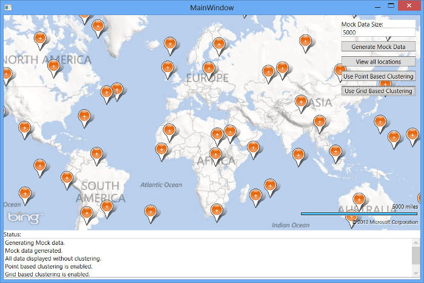

Pushpin Clustering with the Bing Maps WPF control
Introduction
Often we want to load a lot of data on the map, for example if you were a real estate company you would likely want to load up all the properties that matched a user’s search. This could potentially be a couple hundred, if not thousands of results.
If you are zoomed in close to the map it will be pretty easy to identify each location on the map, but if you zoom out the pushpins will likely overlap and the map will become cluttered. Here is an example of 5000 pushpins that are unclustered:

Clustering is the process of grouping closely positioned locations together and representing them with a single pushpin. When you zoom in those locations will become further apart and will separate into their own pushpins. The client side part of “Client Side Clustering” is clustering the data on the fly in code rather than going back to the server to request more data. When you have a few thousand or less location to display on the map client side clustering can be significantly faster than server side clustering and also cuts down on request to your server thus making your application more scalable. Here is an example of the same 5000 pushpins from before being clustered:

Note that this code sample requirs the Bing Maps WPF SDK.
Building the Sample
Open the MainWindow.xaml file and location update the map creential provider with your Bing Maps key where it says "YOUR_BING_MAPS_KEY".